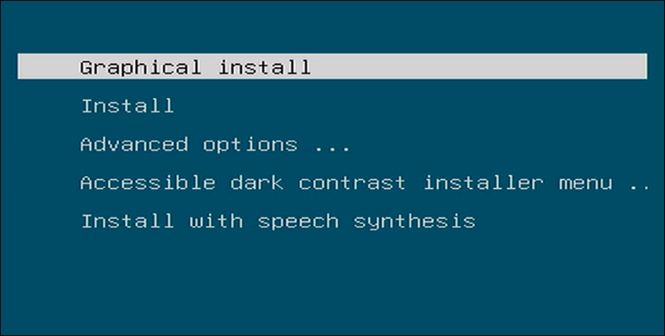
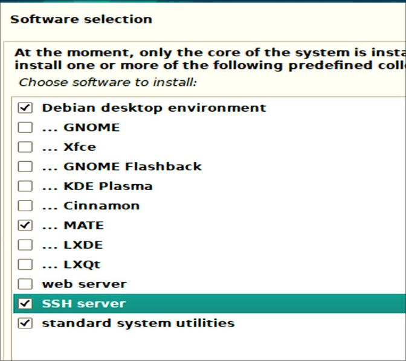
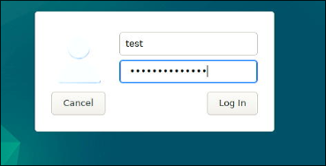
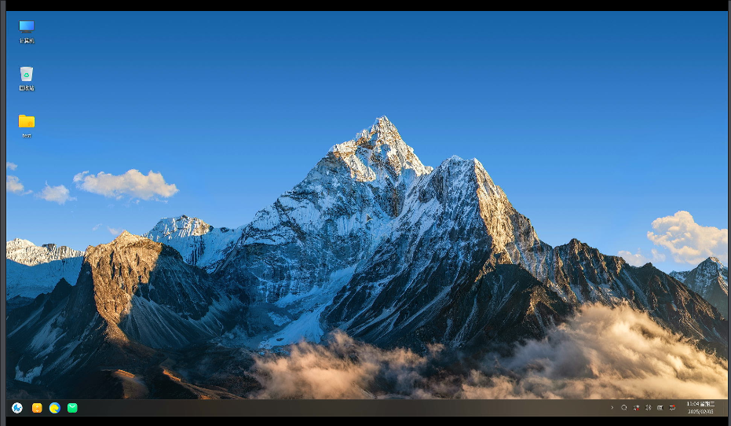
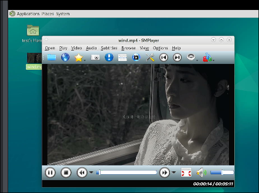
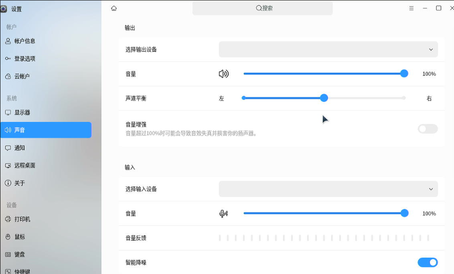
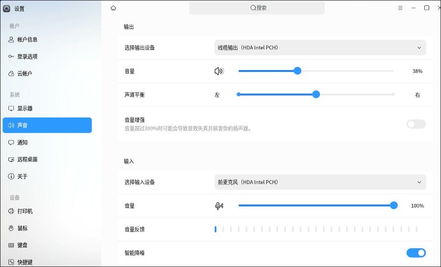
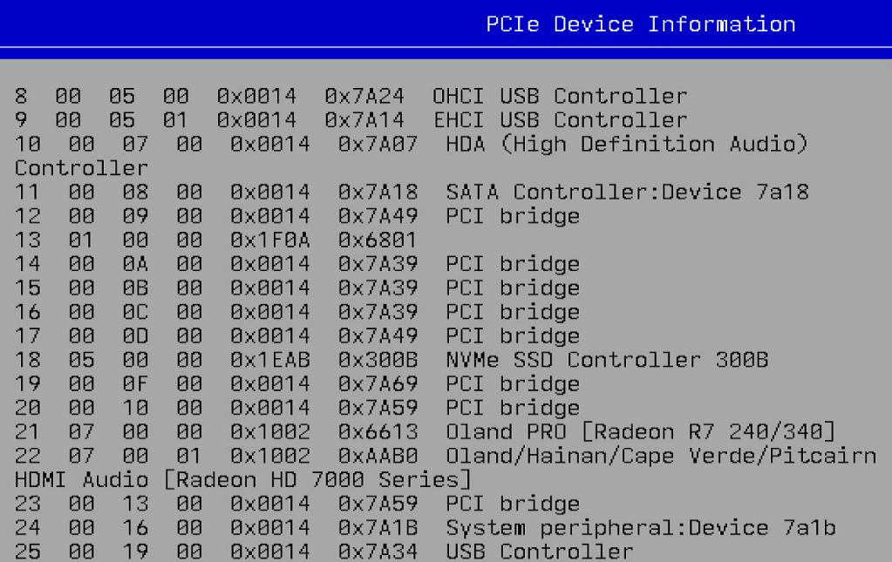

x86_debian_host_setting
Recording the tips for setting up the x86 based lxc desktop host on Debian.
System Installation
The iso is debian-12.9.0-amd64-DVD-1.iso.



Using mate desktop( you could also choose other desktop environments):


Software Setting
Edit the apt's sources list:
# cat /etc/apt/sources.list
#deb cdrom:[Debian GNU/Linux 12.9.0 _Bookworm_ - Official amd64 DVD Binary-1 with firmware 20250111-10:55]/ bookworm contrib main non-free-firmware
deb http://mirrors.ustc.edu.cn/debian bookworm main contrib non-free non-free-firmware
# deb-src http://mirrors.ustc.edu.cn/debian bookworm main contrib non-free non-free-firmware
deb http://mirrors.ustc.edu.cn/debian bookworm-updates main contrib non-free non-free-firmware
# deb-src http://mirrors.ustc.edu.cn/debian bookworm-updates main contrib non-free non-free-firmware
# backports 软件源，请按需启用
# deb http://mirrors.ustc.edu.cn/debian bookworm-backports main contrib non-free non-free-firmware
# deb-src http://mirrors.ustc.edu.cn/debian bookworm-backports main contrib non-free non-free-firmware
# apt update -y && apt upgrade -y
Install some necessary packages:
apt install -y iotop vim nethogs s-tui libvirt-daemon-driver-lxc virt-manager lxc lxc-templates lxcfs
Autologin configuration:
# vim /etc/lightdm/lightdm.conf
subuid and subgid configuration:
root@lxcdesktop:~# cat /etc/subuid
test:100000:65536
root:100000:65536
root@lxcdesktop:~# cat /etc/subgid
test:100000:65536
root:100000:65536

Reboot the machine now.
lxc configuration
Edit the common.conf:
diff /usr/share/lxc/config/common.conf /usr/share/lxc/config/common.conf.bak
40,53d39
< ### tty0, tty1, tty7, tty8
< lxc.cgroup.devices.allow = c 4:0 rwm
< lxc.cgroup.devices.allow = c 4:1 rwm
< lxc.cgroup.devices.allow = c 4:7 rwm
< lxc.cgroup.devices.allow = c 4:8 rwm
< ## graphics. /dev/dri
< lxc.cgroup.devices.allow = c 226:0 rwm
< lxc.cgroup.devices.allow = c 226:128 rwm
< ## graphics. /dev/fb0
< lxc.cgroup.devices.allow = c 29:0 rwm
< ### sound
< lxc.cgroup.devices.allow = c 116:* rwm
< ### input
< lxc.cgroup.devices.allow = c 13:* rwm
89,104d74
< ## graphics. /dev/dri
< lxc.cgroup2.devices.allow = c 226:0 rwm
< lxc.cgroup2.devices.allow = c 226:128 rwm
< ## graphics. /dev/fb0
< lxc.cgroup2.devices.allow = c 29:0 rwm
< ## graphics. /dev/fb1
< #lxc.cgroup2.devices.allow = c 29:1 rwm
< ## tty0, 1, 7, 8
< lxc.cgroup2.devices.allow = c 4:0 rwm
< lxc.cgroup2.devices.allow = c 4:1 rwm
< lxc.cgroup2.devices.allow = c 4:7 rwm
< lxc.cgroup2.devices.allow = c 4:8 rwm
< ### sound
< lxc.cgroup2.devices.allow = c 116:* rwm
< ### input
< lxc.cgroup2.devices.allow = c 13:* rwm
107c77
< lxc.mount.auto = cgroup:mixed proc:rw sys:mixed
---
> lxc.mount.auto = cgroup:mixed proc:mixed sys:mixed
109d78
< lxc.mount.entry = /dev/snd dev/snd none bind,optional,create=dir
Edit crontab for setting the privilege:
# crontab -e
@reboot chmod 777 /dev/tty* && chmod 777 /dev/fb* && chmod 777 -R /dev/dri/* && chmod 777 -R /dev/snd/*
Create the lxc desktop instance:
# ls
kylinlxc.tar.xz uoslxcdesktop.tar.xz zkfdlxc.tar.xz
meta.tar.xz uoslxc.tar.xz
# root@lxcdesktop:~# lxc-create -t local -n kylinlxc -- -m /root/meta.tar.xz -f /root/kylinlxc.tar.xz
Unpacking the rootfs
---
You just created an Ubuntu jammy amd64 (20241021_07:42) container.
To enable SSH, run: apt install openssh-server
No default root or user password are set by LXC.
Edit the lxc instance's configuration file:
root@lxcdesktop:~# cat //var/lib/lxc/kylinlxc/config
# Template used to create this container: /usr/share/lxc/templates/lxc-local
# Parameters passed to the template: -m /root/meta.tar.xz -f /root/kylinlxc.tar.xz
# For additional config options, please look at lxc.container.conf(5)
# Uncomment the following line to support nesting containers:
#lxc.include = /usr/share/lxc/config/nesting.conf
# (Be aware this has security implications)
# Distribution configuration
lxc.include = /usr/share/lxc/config/common.conf
lxc.arch = linux64
# Container specific configuration
lxc.apparmor.profile = generated
lxc.apparmor.allow_nesting = 1
lxc.rootfs.path = dir:/var/lib/lxc/kylinlxc/rootfs
lxc.uts.name = kylinlxc
# Network configuration
lxc.net.0.type = veth
lxc.net.0.link = lxcbr0
lxc.net.0.flags = up
lxc.mount.entry = /dev/fb0 dev/fb0 none bind,optional,create=file
lxc.mount.entry = /dev/dri dev/dri none bind,optional,create=dir
lxc.mount.entry = /dev/dri/renderD128 dev/dri/renderD128 none bind,optional,create=file
### allow tty8
lxc.mount.entry = /dev/tty7 dev/tty7 none bind,optional,create=file
lxc.mount.entry = /dev/tty8 dev/tty8 none bind,optional,create=file
lxc.mount.entry = /dev/tty0 dev/tty0 none bind,optional,create=file
### allow all of the input
lxc.mount.entry = /dev/input dev/input none bind,optional,create=dir
### allow all of the snd
lxc.mount.entry = /dev/snd dev/snd none bind,optional,create=d
Create the preX-populate-input.sh for this instance:
root@lxcdesktop:~# cat preX-populate-input.sh
#!/usr/bin/env bash
### Creates config file for X with all currently present input devices
# after connecting new device restart X (systemctl restart lightdm)
######################################################################
cat >/etc/X11/xorg.conf.d/10-lxc-input.conf << _EOF_
Section "ServerFlags"
Option "AutoAddDevices" "False"
EndSection
_EOF_
cd /dev/input
for input in event*
do
cat >> /etc/X11/xorg.conf.d/10-lxc-input.conf <<_EOF_
Section "InputDevice"
Identifier "$input"
Option "Device" "/dev/input/$input"
Option "AutoServerLayout" "true"
Driver "evdev"
EndSection
_EOF_
done
# cp preX-populate-input.sh /var/lib/lxc/kylinlxc/rootfs/usr/local/bin/
# mkdir -p /var/lib/lxc/kylinlxc/rootfs/etc/X11/xorg.conf.d/
# chmod 777 /var/lib/lxc/kylinlxc/rootfs/usr/local/bin/preX-populate-input.sh
Edit the lightdm's configuration file:
# cat override.conf
[Service]
ExecStartPre=/bin/sh -c '/usr/local/bin/preX-populate-input.sh'
SupplementaryGroups=video render input audio tty
# mkdir -p /var/lib/lxc/kylinlxc/rootfs/etc/systemd/system/lightdm.service.d
# cp override.conf /var/lib/lxc/kylinlxc/rootfs/etc/systemd/system/lightdm.service.d/
root@lxcdesktop:~# vim /var/lib/lxc/kylinlxc/rootfs/etc/lightdm/lightdm.conf
root@lxcdesktop:~# cat /var/lib/lxc/kylinlxc/rootfs/etc/lightdm/lightdm.conf
[LightDM]
minimum-vt=8
[SeatDefaults]
autologin-guest=false
autologin-user=test
autologin-user-timeout=0
Now start the machine via:
lxc-start -n kylinlxc
The result shows:

evdev package issue
since xserver-xorg-input-evdev is not installed via default, install it via:
root@kylinlxc:~# dhclient eth0
root@kylinlxc:~# apt install -y xserver-xorg-input-evdev
sound
Testing the host's sound and video:
# apt install -y smplayer
# smplayer wind.mp4

Get the sound related info:
test@lxcdesktop:~$ export DISPLAY=:0
test@lxcdesktop:~$ pactl list sinks short
0 alsa_output.pci-0000_00_1f.3.analog-stereo module-alsa-card.c s16le 2ch 44100Hz SUSPENDED
Copy the media file to lxc guest:
# cp /home/test/Desktop/wind.mp4 /var/lib/lxc/kylinlxc/rootfs/home/test/桌面/
Install smplayer in lxc guest:
# lxc-attach -n kylinlxc
root@kylinlxc:~# apt install -y smplayer
in Default configuration, no sound device have been added:

Add crontab task:
root@lxcdesktop:~# lxc-attach -n kylinlxc
root@kylinlxc:~# su test
To run a command as administrator (user "root"), use "sudo <command>".
See "man sudo_root" for details.
test@kylinlxc:/root$ crontab -e
@reboot sleep 10; export DISPLAY=:0; /usr/bin/pactl load-module module-alsa-card device_id=1 ; /usr/bin/pactl load-module module-alsa-card device_id=0
Then you could have video playbook normally.

Loongson 3A6000
Hardware
Following are some screenshots for Loongson 3A6000.
Startup Logo:

System Summary:

Primary Display:

PCIe Device Information:


System/OS
Login window(Running KDE,sddm):

System information:
(ssh)test@aosc-9588454d [ ~ ] $ cat /etc/issue
\n - AOSC OS 11.5.2 / Kernel \r (\l)
(ssh)test@aosc-9588454d [ ~ ] $ uname -a
Linux aosc-9588454d 6.10.10-aosc-main #1 SMP PREEMPT_DYNAMIC Fri Sep 13 17:31:45 UTC 2024 loongarch64 GNU/Linux
(ssh)test@aosc-9588454d [ ~ ] $ free -m
total used free shared buff/cache available
内存： 16096 3105 13688 25 852 12991
交换： 15359 0 15359
(ssh)test@aosc-9588454d [ ~ ] $ cat /proc/cpuinfo
system type : generic-loongson-machine
processor : 0
package : 0
core : 0
global_id : 0
CPU Family : Loongson-64bit
Model Name : Loongson-3A6000-HV
CPU Revision : 0x00
FPU Revision : 0x00
CPU MHz : 2500.00
BogoMIPS : 5000.00
TLB Entries : 2112
Address Sizes : 48 bits physical, 48 bits virtual
ISA : loongarch32 loongarch64
Features : cpucfg lam ual fpu lsx lasx crc32 lvz lbt_x86 lbt_arm lbt_mips
Hardware Watchpoint : yes, iwatch count: 8, dwatch count: 4
Driver info:
(ssh)test@aosc-9588454d [ ~ ] $ sudo lspci -vvnn -s 00:07.0 | grep 'in use'
Kernel driver in use: snd_hda_intel
(ssh)test@aosc-9588454d [ ~ ] $ sudo lspci -vvnn -s 07:00.1 | grep 'in use'
Kernel driver in use: snd_hda_intel
(ssh)test@aosc-9588454d [ ~ ] $ sudo lspci -vvnn -s 07:00.0 | grep 'in use'
Kernel driver in use: amdgpu
(ssh)test@aosc-9588454d [ ~ ] $ sudo lspci | grep '07.0'
00:07.0 Audio device: Loongson Technology LLC HDA (High Definition Audio) Controller
07:00.0 VGA compatible controller: Advanced Micro Devices, Inc. [AMD/ATI] Oland PRO [Radeon R7 240/340 / Radeon 520] (rev 83)
07:00.1 Audio device: Advanced Micro Devices, Inc. [AMD/ATI] Oland/Hainan/Cape Verde/Pitcairn HDMI Audio [Radeon HD 7000 Series]
Virtualization
Installed packages:
(ssh)test@aosc-9588454d [ ~ ] $ sudo dpkg -l | grep qemu
ii canokey-qemu 0+git20230605 loongarch64 Library for Qemu to provide a virtual canokey to the guest OS
ii qemu 9.0.1-3 loongarch64 A KVM based virtualization client
(ssh)test@aosc-9588454d [ ~ ] $ dpkg -l | grep libvirt
ii libvirt 10.5.0 loongarch64 API for controlling virtualization engines
ii libvirt-glib 5.0.0 loongarch64 GLib bindings for LibVirt
ii libvirt-python 10.5.0 loongarch64 Python bindings for libvirt
(ssh)test@aosc-9588454d [ ~ ] $ dpkg -l | grep virt-manager
ii virt-manager 4.1.0-3 all Desktop user interface for managing virtual machines
(ssh)test@aosc-9588454d [ ~ ] $ qemu-system-loongarch64 --version
QEMU emulator version 9.0.1
Copyright (c) 2003-2024 Fabrice Bellard and the QEMU Project developers
The virtualization suites are installed via:
$ sudo apt update -y
$ sudo apt install -y virt-manager
$ sudo systemctl enable libvirtd